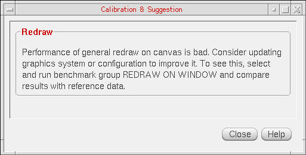
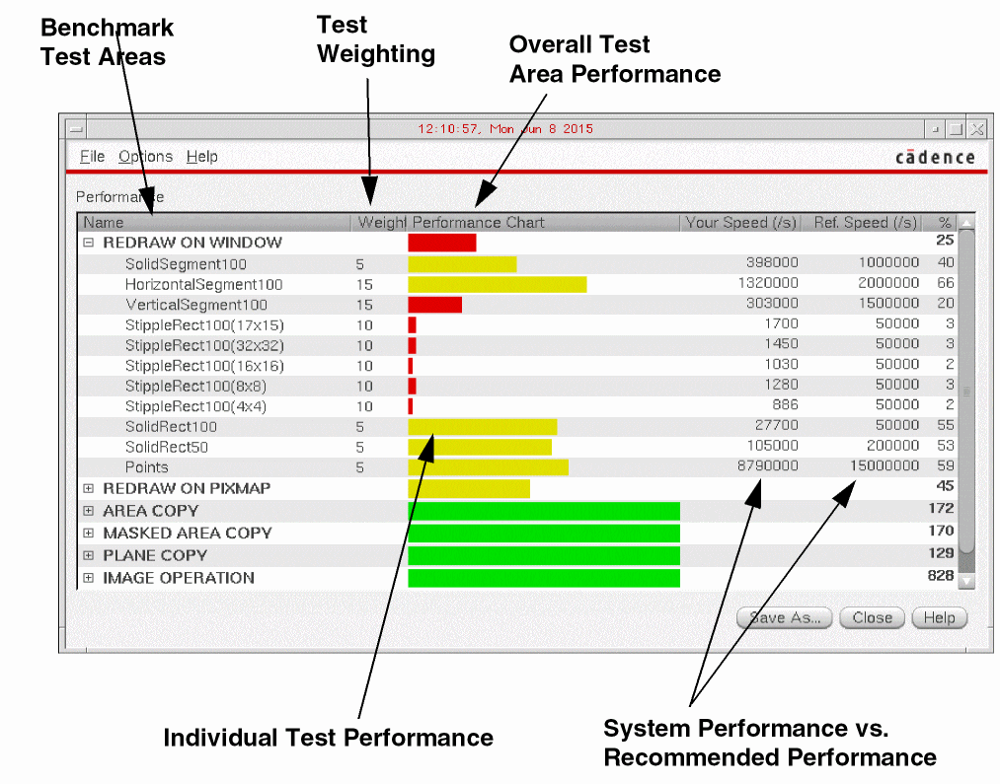

Performing Benchmark Tests
There are two methods that can be used to perform benchmark tests.
- To run the benchmark tests that are currently selected in the Graphics Performance Benchmarks window, click the Run button, or choose File – Run Selected Benchmarks. A Testing window is displayed, and after the testing is complete, the results are displayed in the Benchmark Results window.
-
You can also run the Calibrator tool by selecting Tools – Calibrator to perform a group of predefined benchmark tests designed to measure performance of certain operations that are specific to
virtuoso, such as blinking.
To run the Calibrator tool, you need not select any specific benchmark tests from the Benchmark table. You can monitor the progress of the calibration tests in the Testing window while the tests are being run. After the calibration is complete, the results are displayed in the Calibration & Suggestion window. The Calibration & Suggestion window provides general test analysis results, along with suggestions on how to improve system performance in relation to graphics.
The Benchmark Results window contains the following information columns:
You can save the results in a test (.tst) file by choosing File – Save As. A test results file can then be reloaded in the Graphics Performance Benchmarks window by choosing File – View Saved Results.
To obtain the best calibration results, and related suggestions to improve performance, it is recommended that you use a combination of calibration run methods, amending the selected tests.
Related Topics
Graphics Performance Benchmarks Window Form
Return to top